尽管对长大这件事儿有一万个不情愿，画画也依然毫无长进，我终究还是长成了一个大人。长大，就意味着喝不加糖的咖啡，系一本正经的领带，孩子们开始叫我“先生”。还有更让人沮丧的呢：不知道从哪天起，我竟然开始认真考虑买保险了！什么健康保险啦，牙科保险啦，家庭保险啦，汽车保险啦，这可都是我以前不屑一顾的。过不了多久，我可能就要严肃地给领带上一份“擦不掉的咖啡渍险”了。
幸好，我还是从沉闷枯燥的成人世界里挖掘出了一些趣事。比如说，保险销售的不是看得见、摸得着的商品，而是一个心理药方。没错，他们提供给消费者的就是一份心安。就算是我这种没什么远见的家伙，也可以从他们那儿为长远的未来买一份安稳。
无聊的传统保险还是留给大人们去研究吧。在这一章，我们就来看看那些奇特又另类的保险方案。欢迎跟我一起从全新的角度了解保险，探索这个古怪行业中的数学奥秘：买了保险，就能实现双赢吗？我们是不是中了保险公司的圈套？数学会怎样操纵这场保险人和被保险人之间的博弈？当然，讨论保险的同时，我们顺便还可以聊聊橄榄球和外星人。
不论我们如何长大，都应该知道，保险和成长一样，尽管看起来既古怪又愚蠢，但其实很有用。1
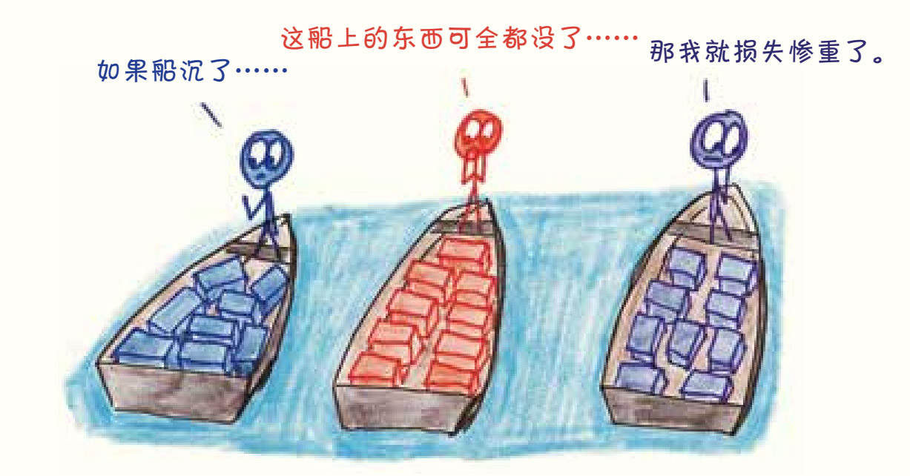
一艘船只要在水上航行，就有发生事故的风险。早在5000多年前，中国商人就开始用船运货2，沿着河岸做生意。如果一切顺利，船和货如期抵达，那自然万事大吉，但如果船在路上遭遇了急流，或是触了礁，船损货毁，那一船货物可就被送到河床里去了，河床当然不会愿意为它们掏腰包。
命运就这样甩出了两张牌：成功，只是稳赚不赔；失败，则面临终极灾难。前者吸引人们加入游戏，而后者会让玩家血本无归。
面对这样的难题时，中国古代的商人是怎么做的呢？
非常简单：分散风险。他们不再用同一艘船运输全部货物，而是把这些货物分成好几份，分别装在不同的船上。如此一来，每个商人在每艘船上的东西都不多，就算有某艘船遭遇了什么意外，也没有人会倾家荡产。通过合作，他们成功地把一个小概率的高风险事件转变成了一个大概率的低风险事件。
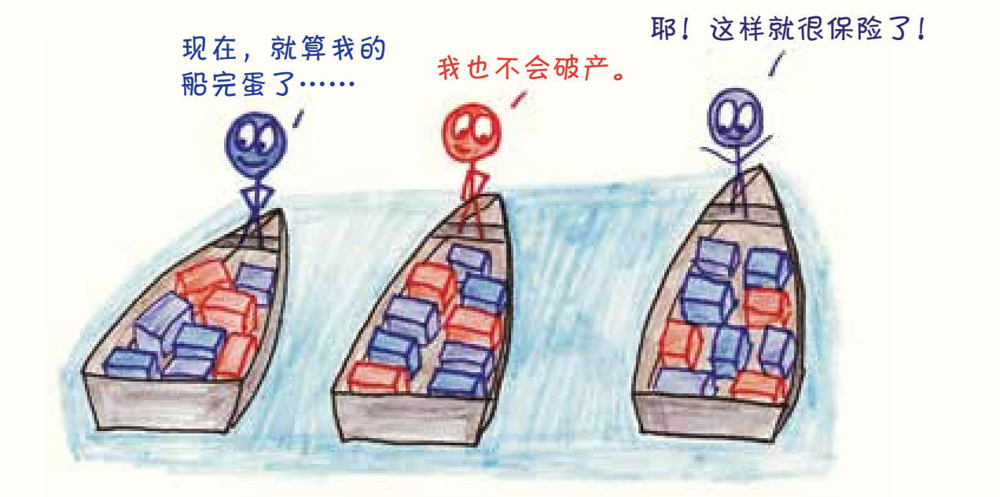
这种分散风险的行为可以追溯到人类有文字记录之前。在一个集体中，一人有难，往往众人相帮，因为每个人都知道，自己也会有需要大家支援的那一天。帮助别人通常是举手之劳，付出这一点儿可控的代价就可以有效消除潜在的风险。
现代社会，“团结的集体”已经被“以营利为目的的保险公司”所取代。旧时的社会互助实施原则（比如，绝对不帮那些平时一毛不拔的吝啬鬼）演化成了精确的公式运算（比如，根据不同的危险因素设置不同的保险比例）。就这样，随着历史的推进，社会秩序演变成了数学秩序。
100个箱子，1艘船
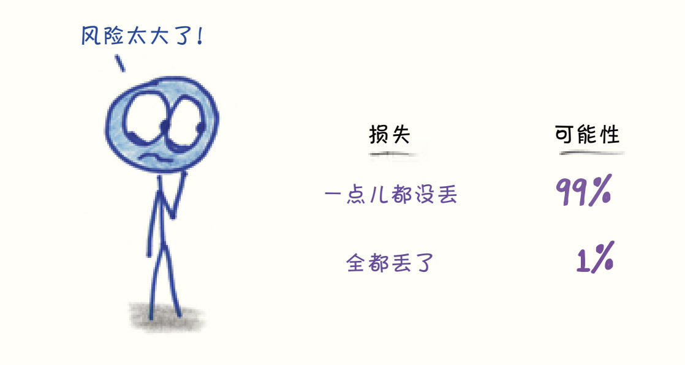
100个箱子，100艘船
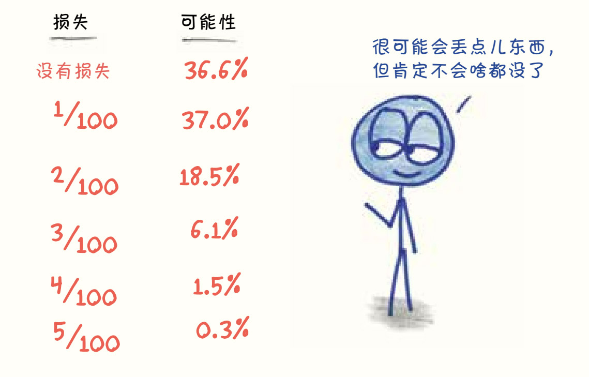
总的说来，现代保险的运作方式和5 000年前没什么两样，我们还是会寻找面临着同样风险的伙伴，交换生命中的某些“货物”，互相帮忙装载，分散船只失事的风险。这样，当沿着人生的河流驾船前行时，我们就能心安了，因为没有什么意外会让我们的人生沉船。
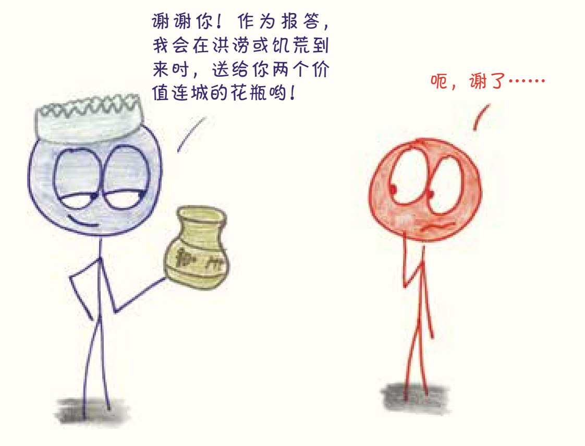
现在，请跟着我一起穿越时空，把目标地点和时间设置为“伊朗，公元前400年的波斯新年”3。
我们来到皇宫，看到国王在百官和公证人的簇拥下，迎接排成一条长队的到访者。队列中的每个人都带来了一份礼物，这份礼物由专门的会计人员迅速传阅后完成评估和记录。没错，我们正在见证的是最欢乐的庆祝仪式：保险注册。
如果你捐赠的物品价值超过10 000达利克(5)，你的名字就会被记录在一个特别的荣誉账簿上。当有需要时，你将收到20 000达利克。尽管捐赠的礼物较小时通常不能得到这样的保障，但仍可能得到可观的回报。比如那个只捐了一个苹果的穷人，他遇到困难的时候，就可以得到一个装满金币的苹果工艺品。
重点当然不是这个奢华的水果工艺品，而是这一场景可以帮我们从一种更残酷的角度来理解保险：保险就是富人向穷人出售一些对抗风险的恢复力。
当坏事发生在富人身上时，他们能从容应对。如果你是一个国王，一个亿万富翁，或者是山姆·沃尔顿(6)的孙子，那么你在生病时可以轻松地付清医药费，在车坏了时可以爽快地买一辆新车，然后继续生活。但是当坏事发生在穷人身上时，他们的生活却可能就此分崩离析。他们可能会因为付不起通勤费而失业、负债或在生病时放弃治疗。当不幸来临时，富人可以很快振作起来、渡过难关，而穷人则会深陷苦难的旋涡，再也无法重新站起来。
因此，尽管这样的逻辑有些讽刺，但保险确实就这么诞生了。无力承担风险的穷人通过付钱给富人，从而提高自己对风险的承受能力。
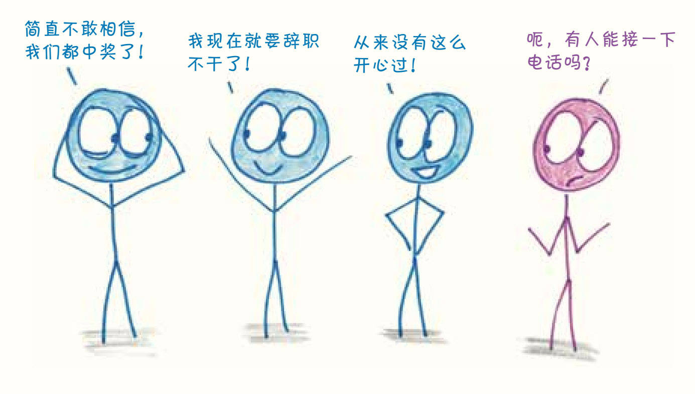
这是一个常见的场景：职员们凑钱一起买彩票，期待有一天中奖了就能集体辞职，为了将来不工作，他们共同努力着。假设他们真的中奖了，那可怜的老板会怎么样呢？某天早上醒来，他发现整个部门的员工都突然辞职了，虽然没有天灾，但这样的“人祸”也够呛了。
身为老板却被员工集体抛弃了？不要害怕，还是有解决之道的。
20世纪90年代，超过1 000家英国企业投资了国家彩票应急保险计划。4万一员工中了彩票头奖，保险的赔偿将帮助弥补公司的收入损失，并承担新员工招聘、再培训和雇用临时工等费用。
（我认为经营这些彩票的政府也应该出售保险计划。就像哥斯拉保险公司也应该提供哥斯拉喷火险一样。）
你可能也猜到了，期望值是对保险公司有利的，但保险公司的利润一定会让你大吃一惊。5一张彩票中头奖的概率是1 400万∶1，而支付比率最高是1 000∶1。小企业的情况更糟。对于只有两个员工的小企业，即使每个员工都购买了10 000张彩票，期望值仍然是不利于企业的。
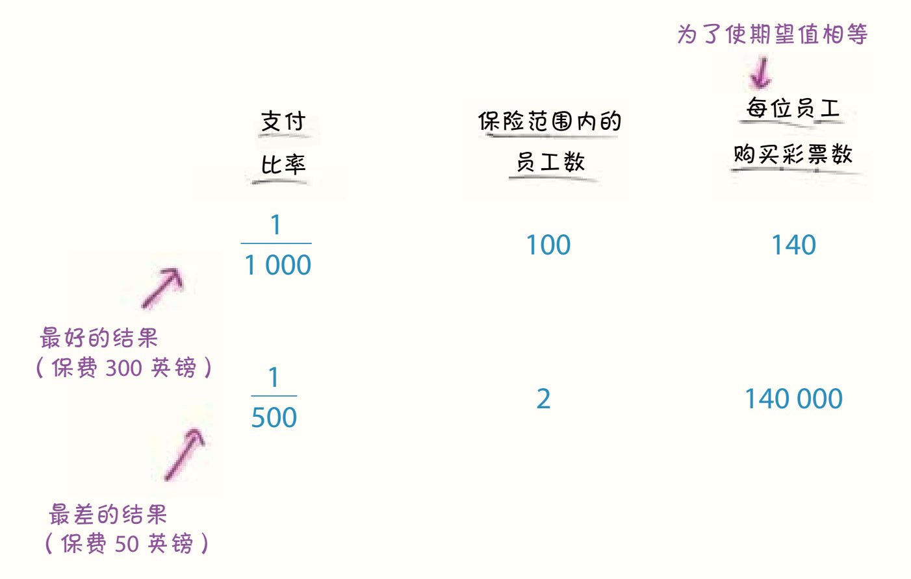
当然了，保险公司不可能只收取和期望值相当的价格。他们还必须考虑自己的成本，更不用说所涉及的风险了。如果将利润率定得过低，那么当有超过理论数量的客户要求赔付时，该保险公司就会面临破产。
至于那些忧心忡忡的老板，还有更好的选择吗？如果你不能为这些员工中奖投保，那就加入他们，和他们一起凑钱买彩票本身就是一项保险计划：如果他们赢了，你也会得到一部分的奖金，作为他们离职的补偿。6
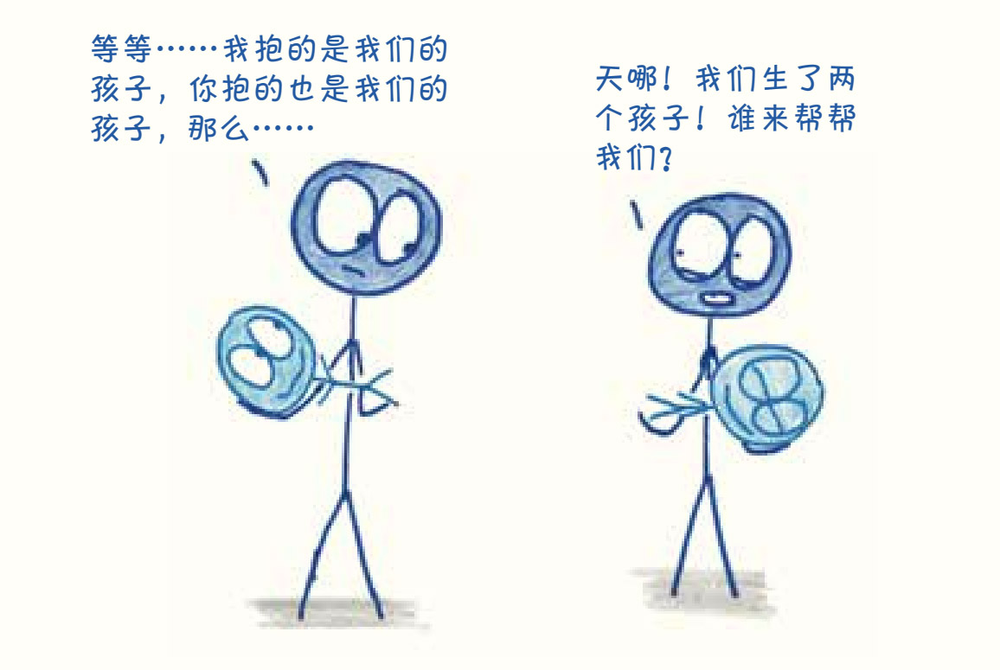
在我看来，照顾“1个”婴儿就已经非常累人了，同时生“2个”婴儿大概就会把家里变成战场，而一次生“3个”婴儿更是怎么也无法想象的——这是分娩中的天文数字。所以当得知每67个孕妇中就有1个会生出多胞胎时，我感到很震惊。在英国，和我一样担心生出多胞胎的准父母可以购买“多胞胎”险7。
根据保险方案的规定，当你生出双胞胎时，保险公司将支付5 000英镑。
分析师兼个人财务顾问郭大卫（David Kuo）对这个保险计划嗤之以鼻：“你还不如把钱拿去赌马。”我明白他的意思：这个计划的期望值非常低。对于一个年龄低于25岁且没有双胞胎家族史的母亲，最低保险费是210英镑。如果有100个这样的母亲买了这个保险，保险公司将可以收到21 000英镑，并（很可能）只需要赔付5 000英镑。这样的利润率是很可观的，没错，我的意思就是“这些投保的客户就是在浪费钱”。
对于有较大可能性生出双胞胎的父母，情况也好不到哪里去。一个34岁且本人就是双胞胎之一的母亲需要支付700英镑的保费，而保险的支付比率只有7比1。
此外，如果你接受过生育治疗，或者已经做过了怀孕11周的超声波检查，就没有购买资格了。
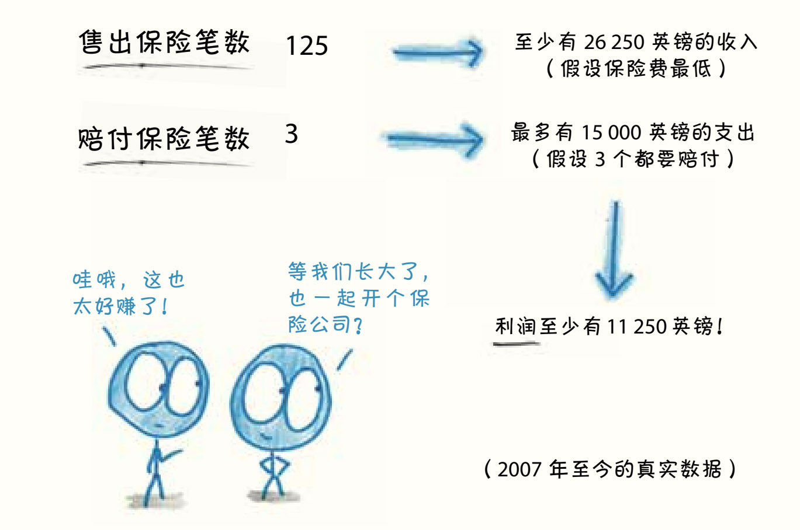
我发现有必要把保险区分成两类：财务保险和心理保险8。
常见的那些保险产品——健康保险、人寿保险、汽车保险，等等——可以帮助投保方避免金融危机，属于财务保险。而相较之下，心理保险对冲的风险更温和。就拿旅游保险来说，你可能买得起飞机票（废话，你已经付过了），但如果假期被迫取消，心情一定会不太好。通过抵消经济成本，保险可以缓解不悦的情绪。
尽管这不是一本自助理财书（数学和糟糕的投资建议），我还是要提出一条建议：要警惕心理保险。
想象一下，如果多胞胎保险公司提供了一系列其他计划，你会不会支付200英镑投保产后抑郁症？会不会担心孩子会是自闭症儿童，养育的成本更高？会不会担心孩子会患有唐氏综合征或者慢性疾病？每种风险听上去都值得防范。但是如果为每个风险都购买200英镑的保险，最终保费的累计成本将超过风险出现时保险公司赔付的金额。如果你能负担得起这么多种保险的费用，那么你本来就能承受它所承保的风险。
还有一个更浅显的例子：对于一件价值不高于20美元的T恤，只要支付3美元，我就可以为其投保。出于保护衣柜库存的心理，你投保了15件最心爱的T恤。当你的狗或双胞胎孩子咬烂了其中一件时，我会快递一件新的给你替换。然而，如果这种情况每年只会出现一次，你将为不超过20美元的服务支付45美元，那为什么不把钱留着，直接再买一件T恤呢？
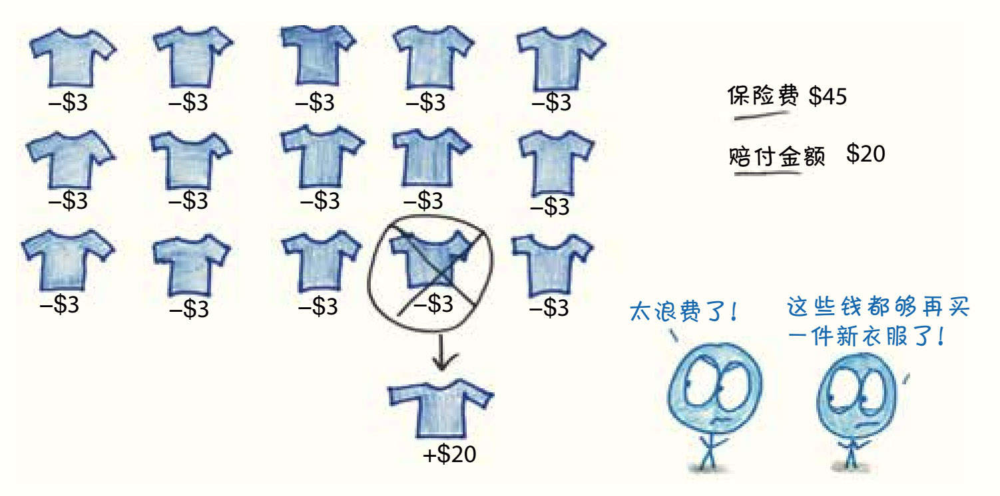
这就是所有心理保险的基本问题：为什么要花这么多钱来规避一个自己原本就能承受的风险呢？
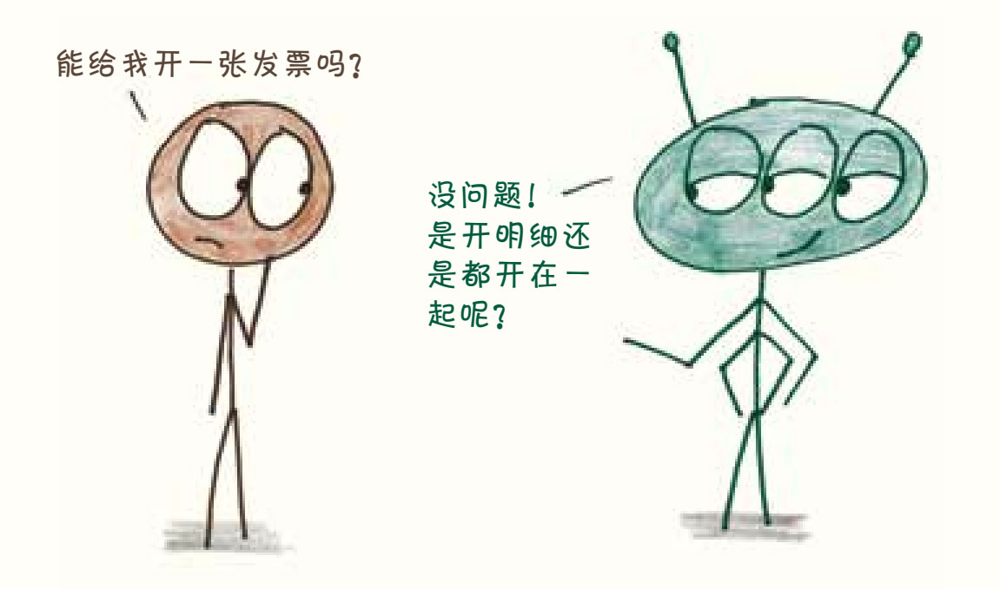
1987年，佛罗里达州一个叫麦克·圣·劳伦斯（Mike St. Lawrence）的家伙推出了一项价值19.95美元的外星人绑架保险9。它提供了1 000万美元的理赔金额，按每年1美元的保险费用支付（直至保费付满或参保人死亡，以先完成者为准）。它还为被绑架者的亲属提供“精神治疗”和“终身陪护”的服务（“仅限于直系亲属”）。这个保险的口号是：“放开我——我买保险了。”如果申请者被问到“你是认真对待这个保险的吗”或者“你父母结婚前有亲戚关系吗”时的回答为“是”，就会被这个保险方案拒绝。这个保险的讽刺意味实在是明显。
但后来，一家英国公司开始正经地销售外星人绑架保险。10他们很快就售出了37 000笔保险费为100英镑的绑架险，然后（惊喜地发现）一笔都没有赔付！这就是将近4 000 000英镑的纯利润。一位管理合伙人表示：“我从不担心那些意志薄弱的人不愿意花钱。”
这个愚蠢的故事指向了一个真正的危险：心理保险会很快变成纯粹的掠夺。在我们购买恐惧的防范措施时，我们也从保险公司那儿买来了恐惧。
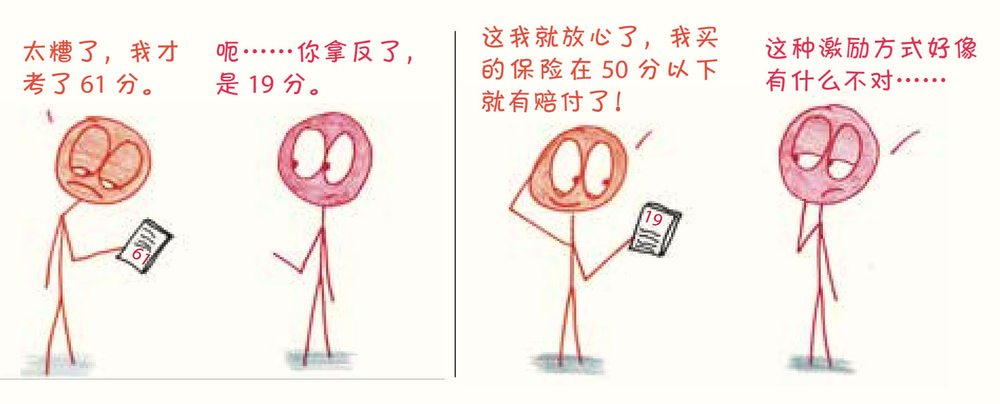
如果你在加州大学伯克利分校攻读数学博士学位，就要参加一场叫作“Qual”的高难度资格考试，在“Qual”中，你得独自面对三位专家教授长达三个小时的口头提问。虽然考试的准备过程很累，但通过率很高——至少有90%——因为只有当你准备好后才会安排考试。专家教授和你一样，都不希望你再来补考一次。
因此，“Qual”考试的失败符合以下标准11：（1）概率很低；（2）给人带来痛苦；（3）很多人都要参加这个考试；（4）存在一定的随机性。看起来，投保的时机似乎成熟了。
什么时候该卖保险呢？
保险企业家的清单
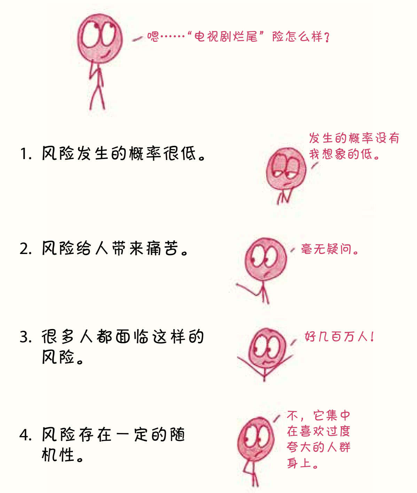
一些博士生提出了一个主意：每位考生支付5美元到一个共用账户中。如果有人没通过考试，钱就都给没通过的人。而如果每个人都通过了考试，大家就用这些钱喝一轮庆功酒。
是不是研究生设计的每种金融工具最后都会以某种方式在酒中把作用发挥得淋漓尽致呢？或许这才是最好的心理保险吧。
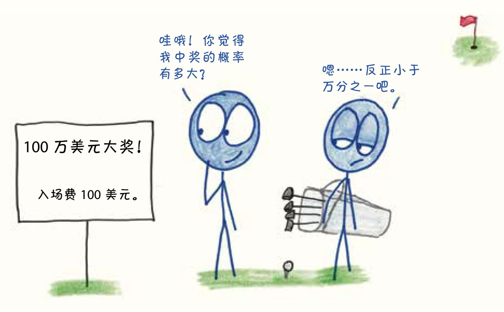
这类华而不实的比赛大概是非常有美国特色的了：奖励1万美元的半场投篮，奖励3万美元的掷骰子，奖励100万美元的一杆进洞。当商家推出这样的促销噱头时，风险是微乎其微的。
也许有人会赢。
但事实证明，这样的市场就是最理想的卖保险情况。作为概率商人，保险公司的偿付能力依赖于精确的计算：在发生概率为
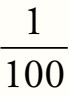
的事件中，50比1的支付比率就能使他们保持盈利；而在发生概率为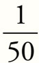
的事件中，100比1的支付比率会让他们破产。对于家庭、生命和健康保险来说，保险精算的复杂性相当高，保险公司很容易计算错误。但上述奖金呢，就完全没问题了！
还是以一杆进洞为例。业余高尔夫球手大约在每12 500次尝试中才能成功1次，所以当奖金是1万美元时，组织比赛的公司在球手的每次参赛上平均花费0.8美元。某公司向球手收取参赛费2.81美元/次，获得了可观的利润。这家公司同时还为100万美元的一杆进洞奖购买了300美元的保险12，这对双方来说都是一笔不错的交易：该公司的风险被分担，而保险公司的预期价值成本仅为80美元。
这家公司还为NBA球迷的1.6万美元半场投篮奖金购买了800美元的保险。除非球迷获胜的概率超过
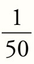
（相当于NBA球员在比赛中的水准），否则对于投保公司和保险公司来说依然是一笔划算的交易。也可以看看哈雷戴维森公司（Harley-Davidson）的例子，如果顾客能掷出6个字母骰子，正好拼出“H-A-R-L-E-Y”，就能得到3万美元的奖金，而这家公司为这3万美元购买了保险。每个参赛者的期望值仅为0.64美元，而公司向他们每人收取1.5美元。这比其他的保险精算简单多了。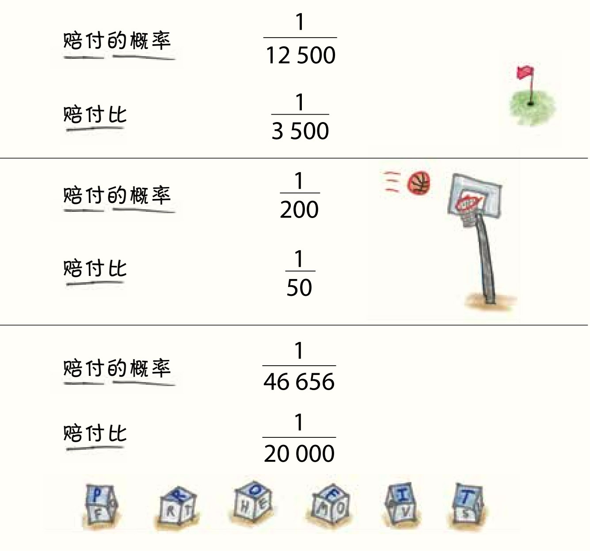
但这种保险也不是毫无风险的。2007年，波士顿地区的零售商乔丹家具进行了一场很有吸引力的促销活动：如果红袜队能在10月举行的世界职业棒球大赛蝉联冠军，那么顾客在4月或5月购买任何沙发、桌子、床或床垫的钱将全额退还。在这个活动中，销售量接近3万件，销售额约为2 000万美元。13
最终，红袜队真的赢了。在乔丹家具工作的红袜球迷也兴奋不已，毕竟他们买了保险。
而保险公司的人呢？当然不高兴了。
现在请和我一起做个心理试验。一个陌生人递给你一枚硬币，你抛出它后隐瞒了结果，请问正面的概率是多少？
• 路人甲：“我不知道……50%？”
• 那个给你硬币并知道它被动过手脚，可能会偏向正面的人：“70%！”
• 偷偷看过了一眼结果的你：“100%。”
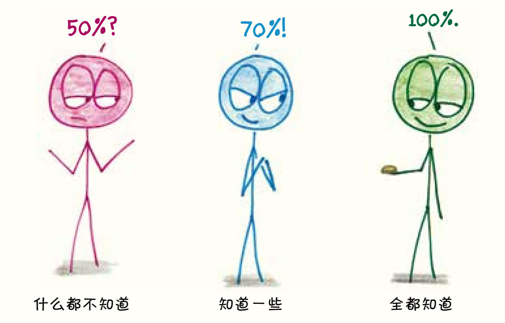
大家说得都没错。不确定性是对知识的一种度量，每个人都对自己已知的信息给出了合理的考量和分析。事实上，每一种可能性都应该加上一个脚注：“就我所知。”
这种动态的不确定性可能成为保险公司的噩梦。如果他们是随机的路人，而买保险的人却偷偷看了一眼硬币呢？
Wedsure婚礼保险公司为各种各样的婚礼失败提供保险14：损坏的新娘礼服、被盗的礼物、未到场的摄影师、集体食物中毒等。但他们最吸引人眼球的保险方案也是出现问题最多的：“婚礼变心”险。
1998年，一位记者问这家公司的老板罗布·纽克西奥（Rob Nuccio），是否考虑为因后悔而取消的婚礼提供保险方案。对方笑答：“这太容易让我们被结婚的双方骗保了，如果你心里存在这个问题，那就不要结婚。”然而，2007年他改变了主意，提供了这样的保险：在至少提前120天通知的情况下，向第三方（而非夫妇本人）提供保险赔付。15但纽克西奥说：“一个问题出现了，新娘的母亲向我们提出索赔要求，但她事先就知道她的女儿不宜结婚。”不用说，每个母亲都比保险公司更了解自己女儿的心事，她们偷看了那枚硬币。这件事发生后，纽克西奥将时间范围的要求扩大到180天，后来又增加到270天，最后定为365天。
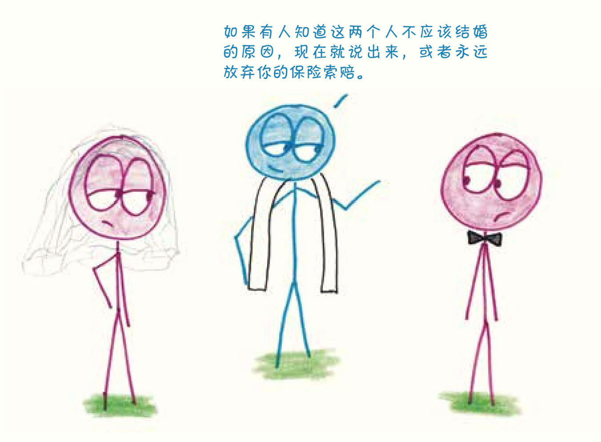
这是保险公司最常遇到的核心问题，购买保险的人通常知道保险公司无法知道的细节。对此，保险公司有五种可能的解决方案：
1. 将利润率设置为高于正常水平。
2. 采取详细的应用规程弥补双方对细节了解的差异。
3. 同时提供便宜的低覆盖选项和昂贵的高覆盖选项，高风险人群自然会被后者吸引。
4. 比客户更了解所投保的风险。16
5. 停止为这种风险投保。
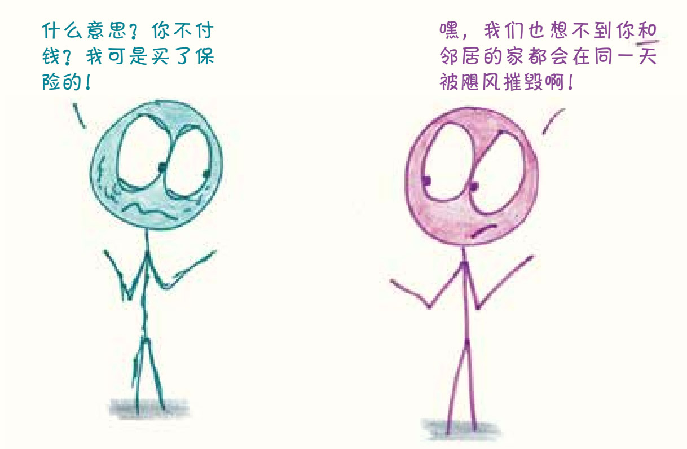
和投保人的信息不对称让保险公司感到担心，但还不至于让他们夜半惊醒。保险公司真正的噩梦其实是：依赖。
再回想一下中国商人，他们把商品分散在一百艘船上。但是如果沉船事故不是一个个地发生，而是一起发生呢？如果99%的日子里没有船沉，而在1%的日子里所有的船都沉了呢？那么保险就失去作用了，我们面临的个人风险无法通过再分配而减轻。每个人都拿着一张糟糕透顶的彩票去交换另一张同样糟糕的彩票。命运碎片的交换变得毫无用处，当我们倒下的时候，大家都会一起倒下。
这是依赖。对保险公司来说，这是万劫不复的深渊。例如，卡特里娜飓风一次造成了410亿美元的损失，远远超过当年约20亿美元的保险费。在这种情况下，所有鸡蛋都放在一个大篮子里，保险公司面临的风险和被保险人是相同的。
解决这一问题的办法是继续扩大交换命运的规模：保险公司也购买保险，这就叫作“再保险”17。来自不同地区的保险公司看上去是在交易资产，实际是在交换客户，这样使一个地方的公司可以建立起一个分散的风险投资组合。
因此，如果你的财富分散到一百条船上还不足以对抗风险的话，试试将它们分散到一百条河上。
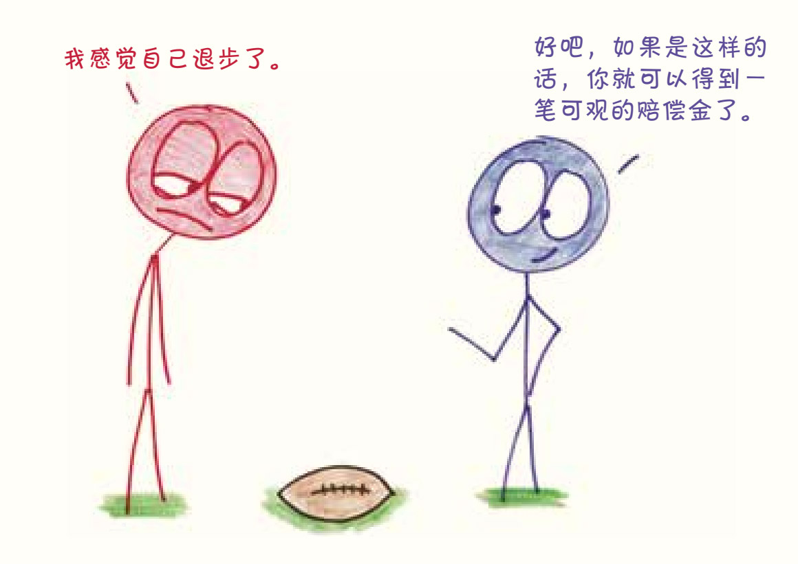
再来一次角色扮演吧：你是一个大学的橄榄球明星，球迷在赤裸的胸膛涂上你们球队的颜色，你拥有的技能价值数百万美元。但你并不能一次得到自己所价值的报酬，而且你随时可能因为受伤而开始走下坡路。这就像你的身体是一张中了头奖的彩票，但你却不能马上把它兑换成现金，要把它扔进洗衣机里洗几次，还得祈祷彩票上的中奖号码不要褪色。
孩子，你打算怎么办呢？
你可以为让你结束职业生涯的伤病投保18，但这还不够。如果伤病只是阻碍了你的职业生涯，却没有结束它呢？如果它使你错过首轮选秀（签700万美元合约），成为第六轮选秀的球员（签100万美元合约）呢，你该怎么办？超过80%的薪酬会化为乌有，而由于你的职业生涯还没结束，前期支出的昂贵保险费（每100万美元的保险费用是1万美元）也毫无用处。
这就是顶级球员开始购买“身价降低”保险的原因。19尽管它并不便宜，赔付金每增加100万美元，保险费将增加4 000美元。但考虑到高价值的前景，这是非常值得的，比如橄榄球角卫伊夫·埃克普-奥洛姆（Ifo Ekpre-Olomu）和近端锋杰克·布特（Jake Butt）20都得到了赔偿。毫无疑问，以后还会有更多球员通过这一保险得到赔付金。
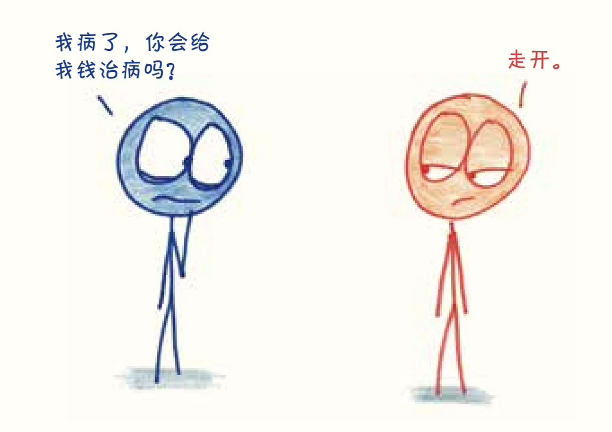
我把最特别的保险产品留到最后：健康保险21。
这有什么特别的呢？首先在于它的复杂性。免赔额、保险范围限制、既有病症、自费比例、可变保费……尽管它不像脑外科手术那么复杂，却事关脑外科手术的资金来源，因此同样令人如履薄冰。其次，随着医疗水平和对健康预测能力的提高，医疗保险能否继续发挥作用，本身就是一个令人头疼的问题。
看看这个简单的医疗保健模型：假设我们每人抛10枚硬币。如果你得到的结果是10个都正面朝上，那么你就患上了可怕的“10个正面病”，这种病将需要50万美元的医药费。
每个人患上重病的概率约是千分之一，但如果每人都拿出800美元来买保险，问题就解决了。对保险公司来说，这就意味着在每1 000人中可以收取80万美元，但只需要支付50万美元。保险公司从中获利，而我们通过购买保险实现风险对冲，可以有效地防止个人破产。这是个双赢的局面。
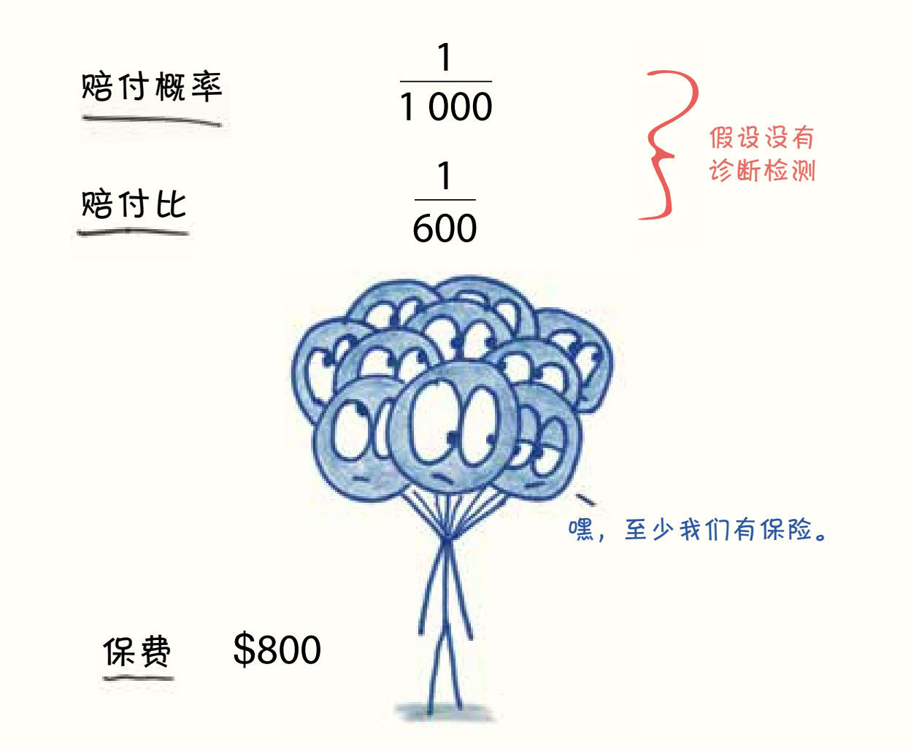
但是，如果我们知道了更多关于健康的信息呢？如果在决定是否购买保险计划之前，我们可以先看一下前5枚硬币，会得到怎样的结果呢？
现在，每1 000人中大约有970人至少看到了1个反面朝上，他们松了一口气：安全了，没有购买保险的必要。但是剩下的30个人紧张了起来，他们其中有一个人可能患有可怕的疾病，这30人预计总共将支出50万美元。即使重新平均分配成本，每人仍要承担上万美元的损失。这样的保险不再能够提供任何安心了。
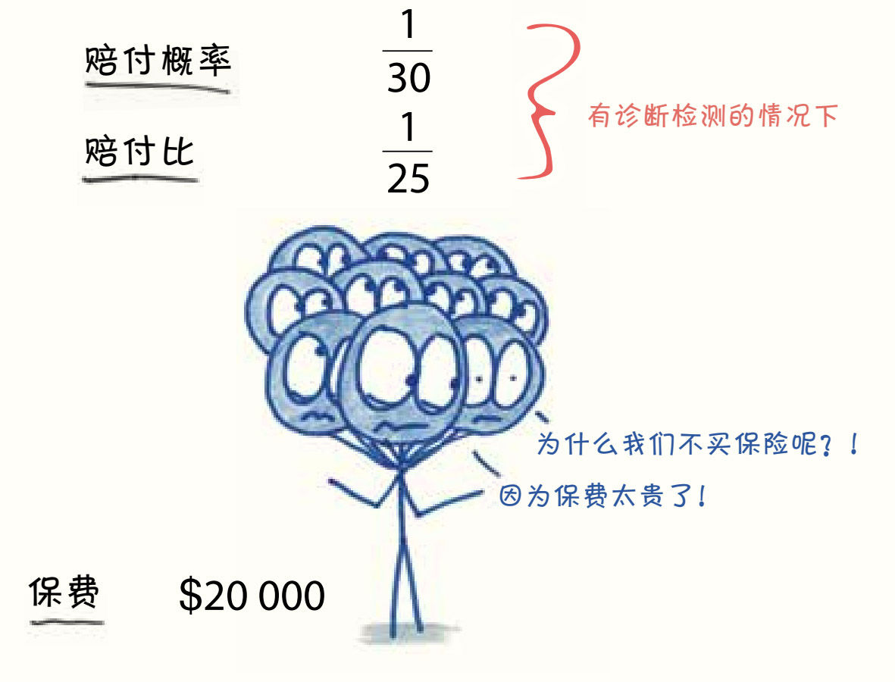
当我们看到前面5枚硬币时，我们的不确定性降低了，而不确定性降低到一定程度时，保险就会崩溃。如果我们事先知道谁会遭受损失——谁的船会沉没，谁的员工会中彩票，谁会受伤、最终无法进入全美橄榄球联盟（NFL）——那么保险就不会存在了。因为只有真正会遭遇损失的人愿意一起分担风险。
在现代医疗系统中，这样的问题正在逐年显现，基因检测和统计学的发展正在威胁着保险的基本逻辑。
针对这个问题，我想不到行之有效的对策。如果将保险费根据不同客户的患病概率进行个性化设置，那么有些人只需支付几分钱，而另一些人的保费几乎与医疗费用一样高，但如果向每个人收取同样的费用，就将原本用于对冲个人风险的互惠项目变成了补贴特定人群的集体慈善项目，这很难让投保人接受。这也是美国的医疗保健制度仍然存在这么大争议的原因之一。
作为一名教师，我倾向于认为所有的知识都是一份礼物。但保险让情况变得复杂起来。对命运的无知会迫使人们互相合作、共同对抗命运，我们就是这样在不确定性中建立了民主制度的，而现在，新的知识和信息如洪水猛兽般威胁和冲击着这种平衡。